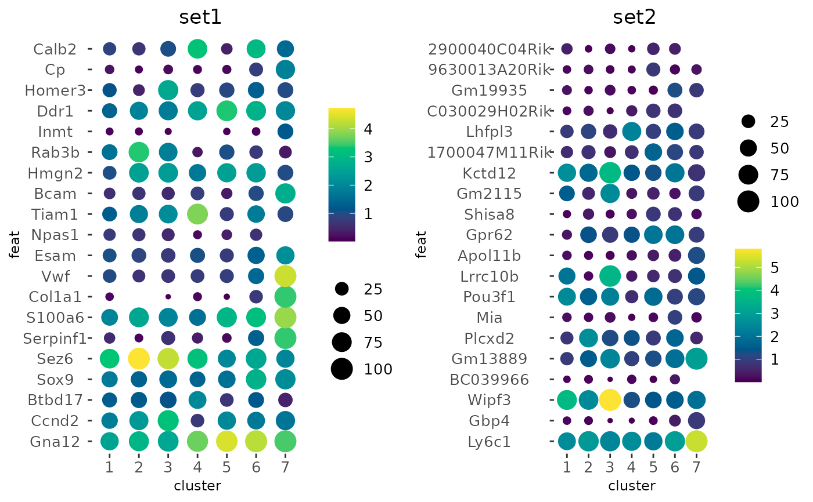
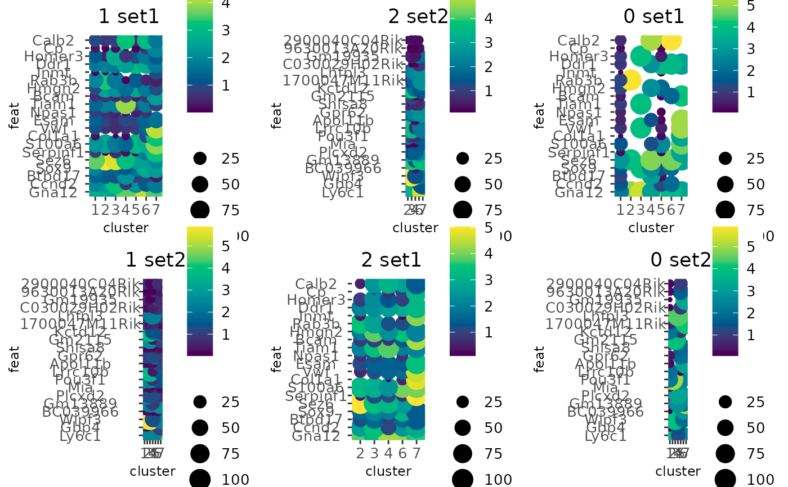
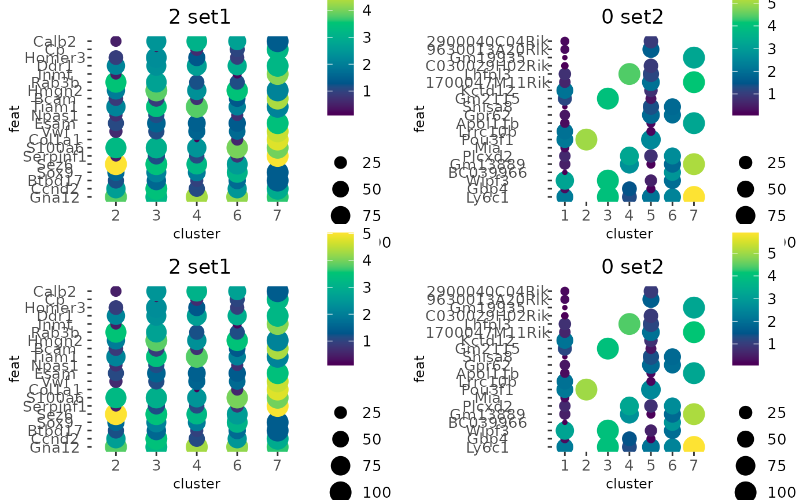

Visualize feature expression statistics applied across clusters/groupings of cells. The default behavior is dot size scaled by what percentage of cells within a particular cluster express the feature, and dot color scaled by mean expression of that feature within the cluster.
Usage
dotPlot(
gobject,
feats,
cluster_column,
cluster_custom_order = NULL,
dot_size = function(x) mean(x != 0) * 100,
dot_size_threshold = 0,
dot_scale = 6,
dot_color = mean,
dot_color_gradient = NULL,
gradient_midpoint = NULL,
gradient_style = "sequential",
gradient_limits = NULL,
group_by = NULL,
group_by_subset = NULL,
spat_unit = NULL,
feat_type = NULL,
expression_values = c("normalized", "scaled", "custom"),
title = NULL,
show_legend = TRUE,
legend_text = 10,
legend_symbol_size = 2,
background_color = "white",
axis_text = 10,
axis_title = 9,
cow_n_col = NULL,
cow_rel_h = 1,
cow_rel_w = 1,
cow_align = "h",
theme_param = list(),
show_plot = NULL,
return_plot = NULL,
save_plot = NULL,
save_param = list(),
default_save_name = "dotPlot"
)Arguments
- gobject
giotto object
- feats
character vector or named list. Features to use or named lists of features to use.
- cluster_column
character. Clusterings column to use (usually in cell metadata)
- cluster_custom_order
character vector. Specific cluster order to use
- dot_size, dot_color
summary function e.g.
sum,mean,var, or other custom function. The default fordot_sizefinds the percentage of cells of a particular cluster that do not have an expression level of 0.- dot_size_threshold
numeric. The minimal value at which a dot is no longer drawn.
- dot_scale
numeric. Controls size of dots
- dot_color_gradient
hex codes or palette name. Color gradient to use.
- gradient_midpoint
numeric. midpoint for color gradient
- gradient_style
either 'divergent' (midpoint is used in color scaling) or 'sequential' (scaled based on data range)
- gradient_limits
numeric vector of length 2. Set minmax value mappings for color gradient
- group_by
character. Create multiple plots based on cell annotation column
- group_by_subset
character. subset the group_by factor column
- spat_unit
spatial unit (e.g. "cell")
- feat_type
feature type (e.g. "rna", "dna", "protein")
- expression_values
character. Expression values to use.
- title
character. title for plot
- show_legend
logical. show legend
- legend_text
size of legend text
- legend_symbol_size
size of legend symbols
- background_color
color of plot background
- axis_text
size of axis text
- axis_title
size of axis title
- cow_n_col
cowplot param: how many columns
- cow_rel_h
cowplot param: relative heights of rows (e.g. c(1,2))
- cow_rel_w
cowplot param: relative widths of columns (e.g. c(1,2))
- cow_align
cowplot param: how to align
- theme_param
list of additional params passed to
ggplot2::theme()- show_plot
logical. show plot
- return_plot
logical. return ggplot object
- save_plot
logical. save the plot
- save_param
list of saving parameters, see
showSaveParameters- default_save_name
default save name for saving, don't change, change save_name in save_param
Examples
g <- GiottoData::loadGiottoMini("visium")
#> 1. read Giotto object
#> 2. read Giotto feature information
#> 3. read Giotto spatial information
#> 3.1 read Giotto spatial shape information
#> 3.2 read Giotto spatial centroid information
#> 3.3 read Giotto spatial overlap information
#> 4. read Giotto image information
#> python already initialized in this session
#> active environment : '/usr/bin/python3'
#> python version : 3.12
library(GiottoClass)
f1 <- head(featIDs(g), 20)
f2 <- tail(featIDs(g), 20)
dotPlot(g, cluster_column = "leiden_clus", feats = f1)
# make two plots from two named sets of features
dotPlot(g,
cluster_column = "leiden_clus",
feats = list(set1 = f1, set2 = f2)
)

# add new cell metadata col that classifies by total expression into
# - 0 (< 900)
# - 1 (> 900 and < 1200)
# - 2 (> 1200)
total_expr <- g$total_expr
#> Getting values from [cell][rna] cell metadata
g$expr_class <- findInterval(total_expr, c(900, 1200))
# Create a dotplot while splitting the values based on the above total
# expression classifications.
dotPlot(g,
cluster_column = "leiden_clus",
feats = list(set1 = f1, set2 = f2),
group_by = "expr_class"
)

# Same as before, but focusing on classifications 0 and 2
dotPlot(g,
cluster_column = "leiden_clus",
feats = list(set1 = f1, set2 = f2),
group_by = "expr_class",
group_by_subset = c(0, 2)
)

# example with an alternate function used for `dot_color` and a different
# color gradient
dotPlot(g,
cluster_column = "leiden_clus",
feats = f1,
dot_size = mean,
dot_color = var,
dot_color_gradient = c("#EEEEFF", "#333377")
)